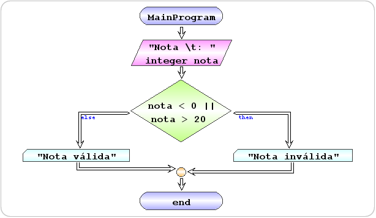

begin MainProgram
read integer nota "Nota \t: "
if nota < 0 || nota > 20 then
write "Nota inválida"
else
write "Nota válida"
end if
end MainProgram
| Exercício | Dificuldade | Pontos | Data limite | Créditos |
|---|---|---|---|---|
| Ficha04_017 | Demonstration | 1.0 | (c)M@nso 2020 |
| Problema | Fluxograma | Algorithmi |
|---|---|---|
|
 | begin MainProgram
read integer nota "Nota \t: "
if nota < 0 || nota > 20 then
write "Nota inválida"
else
write "Nota válida"
end if
end MainProgram
|
| Input | Output |
|---|---|